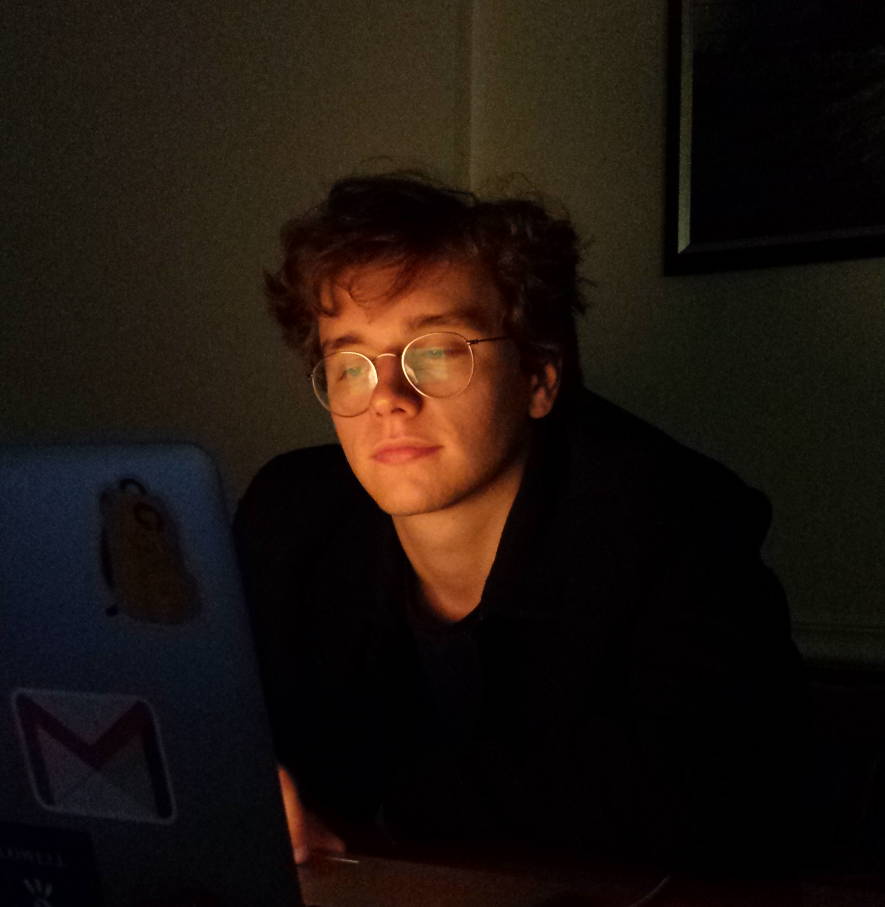

Carl Denton

I am a second-year student at Harvard University studying Computer Science and Physics. Since June 2016, I have been a research assistant in the Harvard NLP group.
Research
- Structured Attention Networks. Yoon Kim, Carl Denton, Luong Hoang, Alexander Rush. ICLR 2017.
arxiv; code
Teaching
- Teaching Fellow, CS 181: Machine Learning, Spring 2017
- Grader, Physics 16: Mechanics and Special Relativity, Fall 2016
Coursework
- CS 287: Statistical Natural Language Processing - Spring 2016
- AC 274: Computational Physics - Fall 2016
- CS 161: Operating Systems - Spring 2017
- CS 124: Algorithms and Data Structures - Spring 2017
- Math 114: Measure Theory and Fourier Analysis - Fall 2016
- CS 61: Systems Programming - Fall 2016
- Physics 143a: Quantum Mechanics - Fall 2016
- ...